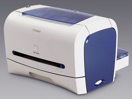
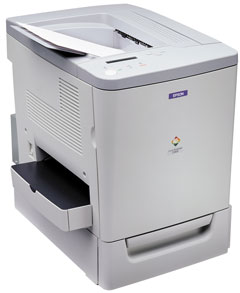
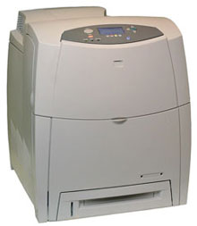
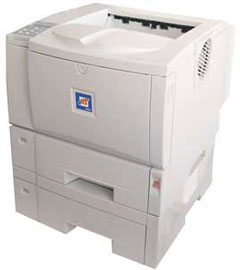
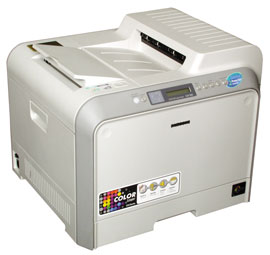

Андрей Ездаков
Лазерная печать в офисе
Сегодня лазерный принтер - практически обязательный и незаменимый атрибут любого офиса. Наиболее активно эксплуатируемая категория таких аппаратов относится к устройствам масштаба рабочей группы. Такие модели имеют скорость печати в пределах от 15 до 35 стр./мин и в основном поддерживают сетевую печать.
Особенностью последнего времени стало широкое распространение цветных лазерных печатающих устройств масштаба рабочей группы. Особенно активно процесс замещения монохромных аппаратов цветными пошел тогда, когда цена последних существенно снизилась, а стоимость и качество черно-белых отпечатков стали почти идентичными. По мнению ряда аналитиков отрасли и специалистов компаний-производителей, эта тенденция сохранится.
Сегмент цветных лазерных принтеров в последнее время стал одним из наиболее динамично развивающихся на принтерном рынке, его доля из года в год постоянно увеличивается. Это происходит в силу ряда взаимосвязанных причин. Во-первых, в результате заметного снижения цен на такие устройства цветные лазерные принтеры стали доступными и привлекательными для большего круга пользователей. Во-вторых, растет объем печати различных офисных документов в цвете (таблицы, графики, презентации, отчеты и т. д.). К тому же подобные устройства обеспечивают высокое качество печати, надежны в работе и позволяют получать качественно иные документы - в цвете.
Для принтерного оборудования категории рабочей группы важную роль играет такой показатель, как стоимость печати. Основной объем печати в офисе (90-95%) обычно составляют черно-белые документы. Для их распечатки достаточно монохромного принтера, стоимость печати на которых (не говоря уже о самих принтерах) была ниже, чем на цветных устройствах. Теперь ситуация изменилась - стоимость печати черно-белых документов на цветном лазерном принтере стала примерно такой же, как и на обычном монохромном устройстве аналогичного класса. Так что цветные лазерные принтеры сегодня способны конкурировать со своими монохромными собратьями по всем параметрам.
Теперь потребителям остается только правильно сделать свой выбор в многообразии монохромных и цветных печатающих устройств масштаба рабочей группы, предлагаемых многими производителями.
Принтеры Canon
Компания Canon (http://www.canon.ru) предлагает отечественным пользователям несколько лазерных печатающих устройств, предназначенных для рабочих групп. Среди них два новых принтера: цветной CLBP2410 и монохромный LBP3200.
CLBP2410, устройство формата A4, печатает со скоростью до 16 стр./мин в монохромном режиме и до 4 стр./мин в цвете с разрешением 600x600 точек на дюйм. Время выхода первой страницы составляет 16 с. Это простой недорогой принтер для работы в небольших рабочих группах. Объем ОЗУ равен 8 Мбайт, внешним интерфейсом служит USB-порт и сетевая плата стандарта Ethernet 10/100Base-TX. Емкость стандартного входного лотка составляет 125 листов, опционально можно установить кассету на 250 листов. Выходной лоток тоже рассчитан на прием 125 листов. Ресурс картриджа с тонером - 5000 страниц при 4%-ном заполнении. Принтер функционирует под управлением ОС Microsoft Windows 9x/Me/2000/XP. Купить его можно по цене от 850 до 900 долл.
Вторая модель, LBP3200, представляет собой монохромное печатающее устройство с производительностью до 18 стр./мин при разрешении 600x600 точек на дюйм в формате A4. Время выхода первой страницы - не более 10 с (лицевой стороной вверх) или 9 с (наоборот). Принтер компактен (масса менее 7 кг) и имеет стильный дизайн. Использование технологии автоматического улучшения изображения AIR (Automatic Image Refinement) обеспечивает профессиональное качество печати с разрешением до 2400 точек на дюйм. Принтер также функционирует под управлением ОС Microsoft Windows 9x/Me/2000/XP. Примерная стоимость этой модели - 250 долл.
|  | Лазерный принтер Canon LBP3200.
|
Емкость стандартного входного лотка (кассеты) у LBP3200 составляет 250 листов, выходного - 100 листов. Внешний интерфейс - USB-порт, объем ОЗУ принтера составляет всего 2 Мбайт. Высокой скорости печати при таких аппаратных характеристиках Canon удалось добиться, применив в новом принтере драйвер, работающий по усовершенствованной технологии печати CAPT (Canon Advanced Printing Technology), и технологию сжатия данных SCoA (Smart Compression Architecture). В отличие от традиционных принтеров, в основном использующих собственную память для сжатия данных, в LBP3200 растрирование задания на печать драйвером CAPT и сжатие данных системой SCoA выполняются еще до отправки на печать. Это снижает требования к памяти устройства и устраняет проблемы с "торможением" его процессора.
В LBP3200 применяется разработанный компанией Canon картридж, устроенный по принципу "все в одном". В одном блоке находятся все три основных элемента лазерного принтера: тонер, барабан и чистящее устройство. При установке нового картриджа заменяются все основные элементы, подверженные износу. В результате пользователь получает принтер, практически не требующий обслуживания. Картридж рассчитан на печать 2500 страниц формата A4 при 5%-ном заполнении.
Устройства Epson
Анализируя ситуацию на рынке лазерной офисной печати, специалисты компании Epson (http://www.epson.ru) делают вывод о том, что объемы продаж цветных лазерных принтеров стабильно растут и их рост продолжится и в дальнейшем, причем опережающими темпами по сравнению с монохромными моделями. Это связано с тем, что цветные лазерные принтеры постоянно совершенствуются, становятся все более доступными по цене. Расширяются их функциональные возможности, внедряются новые, более дешевые и качественные технологии цветной печати. В результате цветные лазерные принтеры становятся оптимальным решением в сегменте офисной лазерной печати.
Таким образом, по оценкам экспертов Epson, вытеснение цветными лазерными офисными принтерами монохромных устройств того же класса - просто вопрос времени. Поэтому компания уделяет много внимания данному сегменту рынка, считая его одним из стратегических направлений своей деятельности. Линейка лазерных цветных офисных принтеров Epson постоянно пополняется все новыми устройствами. Впрочем, компания продолжает активно работать и в сегменте монохромных лазерных принтеров.
В семействе цветных офисных лазерных принтеров AcuLaser C насчитывается несколько моделей разной функциональности, производительности и стоимости.
Недавно выпущенный лазерный принтер Epson AcuLaser C1900 представляет собой компактное устройство для цветной и черно-белой печати формата A4, рассчитанное на малые предприятия или небольшие рабочие группы в офисах. Его производительность составляет до 16 стр./мин в монохромном режиме и до 4 стр./мин в цвете. Специальная технология Epson AcuLaser Color позволяет получать высокое качество печати цветных логотипов, изображений, графиков и текстов с разрешением, эквивалентным 2400 точкам на дюйм.
|  | Лазерный принтер Epson AcuLaser C1900.
|
Epson AcuLaser C1900 предназначен для использования во внутренней сети офиса: в нем имеется поддержка USB-порта, параллельного порта и универсального сетевого адаптера Ethernet 10/100Base-TX, работающего по протоколам TCP/IP, NetBEUI, NetWare, AppleTalk. Стандартно используется лоток на 200 листов, предусмотрена возможность установки дополнительной кассеты емкостью 500 листов. Опционально может устанавливаться устройство для дуплексной печати. Устройство работает под управлением практически всех распространенных ОС - Microsoft Windows 9x/NT 4.0/2000/XP, Mac OS, Linux и Unix. Стоимость этого принтера немногим более 1000 долл., срок гарантийного обслуживания - 1 год.
На российский рынок новое устройство поставляется в нескольких вариантах: стандартная модель AcuLaser C1900S; вариант с дополнительной кассетой - C1900; с расширенным объемом ОЗУ (96 Мбайт), дополнительной кассетой и предустановленным Adobe PostScript 3 - C1900SP; с расширенным ОЗУ, дополнительной кассетой и дуплексом - C1900D; с дополнительной кассетой и сетевой платой Epson 802.11b WiFi, поддерживающей беспроводной доступ к офисной сети, - C1900WiFi.
Более производительное однопроходное устройство AcuLaser C4000 обеспечивает одинаковую скорость печати в цветном и монохромном режимах - до 16 стр./мин в формате A4. Такая высокая скорость цветной печати достигается благодаря специальной технологии Epson - тандемному механизму печати (4-2-1). Кроме того, благодаря блоку термозакрепления с быстрым нагревом (Quick Fuser), впервые примененному Epson в цветном лазерном принтере, эта модель позволяет получать первый цветной отпечаток уже через 17 с после включения. Поэтому она может использоваться в небольших подразделениях компаний, где объем печати документов достаточно высок. В принтере установлен высокопроизводительный RISC-процессор частотой 400 МГц.
Технология AcuLaser Quadra Beam дает возможность одновременно использовать четыре лазерных луча для формирования цветного изображения (каждый для определенного цвета) и контролировать процесс нанесения цветов с гарантированной точностью позиционирования. Использование нового микрополимерного тонера Epson AcuLaser Micro Polymer значительно увеличивает ресурс работы картриджа. Тонер обеспечивает равномерное покрытие поверхности благодаря использованию более мелких частиц.
Технология печати Epson AcuLaser Colour ASIC позволяет достичь высокого качества получаемого отпечатка, одновременно снизив расходы на печать. Кроме того, новый принтер прост в обслуживании. Все четыре раздельных картридж-тонера и один фотокондуктор на все четыре цвета расположены под крышкой в верхней части принтера. Меню Epson Status Monitor 3 предоставляет подробную информацию обо всем процессе печати, сообщает об уровне тонера, запасе бумаги и обо всех возникающих неполадках.
AcuLaser C4000 имеет стандартный лоток для подачи бумаги на 500 листов и универсальный лоток на 100 листов. Количество бумаги можно увеличить до 1600 листов с помощью двух опциональных кассет на 500 листов. Блок двусторонней печати (дуплекс) входит в стандартный комплект поставки. Опционально в принтер может устанавливаться жесткий диск. Для пользователей, работающих с графикой, дополнительно предлагается Adobe PostScript 3.
Принтер изначально подготовлен к сетевому использованию: в нем, помимо параллельного и USB-портов, установлена сетевая плата стандарта Ethernet 10/100Base-TX. Кроме того, устройство снабжено полезным сетевым ПО: это Epson Net WebManager - многофункциональное средство удаленного управления устройством и Epson Net WebAssist - средство конфигурирования сетевого принтера через Web-браузер. Устройство работает под управлением практически всех распространенных ОС - Microsoft Windows 9x/NT 4.0/2000/XP, Mac OS, Linux и Unix, а также сетевых ОС NT 4 Server и Novell NetWare. Стоимость этой модели - примерно 1400 долл.
Еще более мощное новое офисное цветное лазерное устройство компании Epson, AcuLaser C4100, поддерживает скорость печати до 24 стр./мин в формате A4 вне зависимости от цветности отпечатка. Этот принтер ориентирован на использование в рабочих группах с большой ежемесячной печатной нагрузкой. В нем реализованы те же технологии и решения, что и в предыдущей модели. Стоит AcuLaser C4100 около 1900 долл. и имеет гарантийный срок 1 год.
Помимо стандартной модели AcuLaser C4100, пользователям доступны модификации этого устройства: AcuLaser C4100PS с дополнительным объемом ОЗУ (всего 192 Мбайт) и предустановленным Adobe PostScript 3 и C4100T - с дополнительным объемом ОЗУ и блок-кассетой на 1000 листов бумаги.
Кроме цветных лазерных принтеров, в модельном ряду Epson есть монохромные лазерные офисные печатающие устройства семейства EPL. Среди них можно отметить новый сетевой принтер EPL-N3000 формата A4 со скоростью печати до 34 стр./мин. Это устройство позиционируется как принтер для средних и больших рабочих групп с интенсивной печатью документов - до 150 тыс. страниц в месяц.
Время выхода первой страницы у этого устройства составляет всего 7 с. Объем ОЗУ (64 Мбайт) можно расширить до 256 Мбайт. Благодаря встроенным в принтер собственным технологиям печати Epson Enhance Microgrey и RITech он поддерживает разрешение до 1200 точек на дюйм. Помимо стандартных параллельного и USB-портов, в EPL-N3000 штатно имеется универсальная сетевая плата стандарта Ethernet 10/100Base-TX.
Тонер-картридж повышенной емкости, рассчитанный на 17 тыс. страниц при 5%-ном заполнении, значительно снижает затраты на печать и обслуживание принтера. В драйвере EPL-N3000 имеется режим экономии тонера, и пользователь может сам выбрать режим печати задания. Этот принтер поддерживает все современные ОС: Microsoft Windows 9x/Me/NT 4.0/2000/XP, Macintosh Classic, Mac OS X, Linux, Unix и даже MS-DOS. В нем используются языки управления Adobe PostScript 3, ESC/Page, PCL5e, PCL6, GL/2, LJ4, FX, ESC/P2, I239X. В поставку входят дополнительные утилиты, которые позволяют легко конфигурировать, контролировать и управлять процессом печати по сети, в том числе поддерживаются новые протоколы управления - DDNS и Apple Rendezvous. Цена этой модели - 1200 долл., срок гарантийного обслуживания - 1 год.
Подобными же свойствами обладает и другой новый монохромный лазерный принтер компании масштаба рабочей группы - EPL-N7000. Это устройство стоимостью около 2200 долл. поддерживает печать до 35 стр./мин уже в формате A3.
Модели Hewlett-Packard
Компания Hewlett-Packard (http://www.hp.ru), признанный лидер сегмента лазерной офисной печати, предлагает потребителям семейства как монохромных - HP LaserJet, так и цветных - HP Color LaserJet - устройств масштаба рабочей группы.
Среди монохромных можно отметить две модели - HP LaserJet 2200 и 4200. Первое устройство предназначено для небольшой рабочей группы со среднемесячным объемом печати до 40 тыс. страниц. Этот принтер формата A4 имеет производительность до 18 стр./мин при разрешении 1200x1200 точек на дюйм, достигаемом благодаря технологии HP Prores 1200. Время выхода первой страницы составляет 15 с. Версии принтера, имеющие в названии букву d, стандартно оснащаются устройством двусторонней печати (дуплексом).
В этих моделях используется специальный RISC-процессор с тактовой частотой 133 МГц. Стандартный объем ОЗУ принтера, 8 Мбайт, может быть увеличен до 72 Мбайт. Принтер оснащается параллельным и USB-портом. Кроме того, наличие ИК-порта позволяет организовать "быструю печать" нужных материалов, минуя компьютеры и другие сетевые устройства, непосредственно с карманного ПК или мобильного телефона. В версиях HP LaserJet 2200 с буквой n в названии установлен внутренний сервер печати HP JetDirect 610N для сетевых сред Ethernet 10/100Base-TX.
Помимо стандартного многоцелевого лотка емкостью 100 листов и лотка подачи на 250 листов в принтере может устанавливаться дополнительный лоток емкостью 250 или 500 листов (в зависимости от версии устройства). Емкость стандартного лотка приема бумаги составляет 150 листов. HP LaserJet 2200 функционирует под управлением Microsoft Windows 9x/Me/NT 3.1x (PCL 6)/NT 4.0/2000/XP Home или Professional, IBM OS/2, Mac OS версии 7.5.5 и выше, MS-DOS (аппаратная русификация). Драйверы для работы под Linux можно загрузить с Web-сайта http://www.linux.hp.com.
Средний ресурс картриджа составляет 5000 страниц при 5%-ном заполнении. Режим экономичной печати Economode позволяет уменьшить расход тонера до 50% при разрешении 600x600 точек на дюйм.
Более мощное монохромное лазерное печатающее устройство HP LaserJet 4200 функционирует со скоростью до 33 стр./мин при разрешении 1200x1200 точек на дюйм. В сочетании со среднемесячной нагрузкой до 150 тыс. страниц это помещает принтер в разряд устройств для средних или больших рабочих групп со значительным объемом печатной работы. Выход первой страницы происходит менее чем через 8,5 с.
HP LaserJet 4200 снабжен более мощным процессором с тактовой частотой 300 МГц. Его ОЗУ стандартным объемом 48 или 64 Мбайт (в зависимости от версии) может быть расширено до 416 Мбайт. Помимо параллельного порта, совместимого с IEEE 1284, в этом устройстве есть два свободных слота EIO для подключения дополнительных внутренних серверов печати HP JetDirect для сетей Ethernet 10Base-T, 10Base2, 100Base-TX, Localtalk и Token Ring. Встроенный Web-сервер предусматривает возможность прямого доступа к принтеру через стандартный браузер, обеспечивает удаленную конфигурацию устройства и отправку по электронной почте предупреждающих сообщений.
Возможность мониторинга состояния расходных материалов и получения предупреждающих сообщений по электронной почте увеличивает продолжительность бесперебойной работы принтера. Функции анализа заданий на печать и отслеживания использования картриджа позволяют лучше контролировать затраты. Картридж устройства выполнен как единый модуль, включающий в себя тонер, барабан и проявитель, что удобно при замене.
Стандартная емкость входных лотков HP LaserJet 4200 составляет 600 или 1100 листов в зависимости от версии устройства (100 в многоцелевом лотке и 500 или 2x500 в одном или двух лотках). Кроме того, опционально принтер может дооснащаться одним-двумя дополнительными лотками емкостью 500 и 1500 листов. Помимо стандартного выходного приемного устройства, рассчитанного на 250 листов лицевой стороной вниз и 50 лицевой стороной вверх, можно установить магазинный приемный лоток емкостью 500 листов.
HP LaserJet 4200 работает под управлением тех же ОС, что и его младший собрат LaserJet 2200.
Семейство цветных лазерных принтеров компании Hewlett-Packard недавно пополнилось двумя новыми моделями: Color LaserJet 2550 и Color LaserJet 4650. Первая из них - модель начального уровня формата A4 для небольших рабочих групп - имеет скорость печати до 19 стр./мин в черно-белом режиме печати и до 4 стр./мин в цвете. По сравнению с устройствами Color LaserJet 1500 и 2500, на смену которым приходит новый принтер, в нем увеличена скорость черно-белой печати, расширены возможности применения языков управления печатью, улучшен набор внешних интерфейсов и добавлена возможность печати на нестандартных носителях (глянцевой бумаге и пленке).
|  | Цветной лазерный принтер HP Color LaserJet 4650.
|
В новом четырехпроходном принтере установлен процессор Motorola CFV4e с тактовой частотой 264 МГц, стандартный объем ОЗУ (64 Мбайт) может быть увеличен до 192 Мбайт. Время выхода первой страницы составляет 18 с. Аппаратное разрешение 600x600 точек на дюйм увеличивается до 2400x2400 благодаря технологии HP ImageRet 2400. Помимо языка HP PCL 6, поддерживается эмуляция HP PostScript 3. Кроме параллельного порта и порта USB 2.0, сетевые версии принтера (Color LaserJet 2550Ln/n) оснащаются встроенным сервером печати HP JetDirect (10/100Base-TX, RJ45).
Помимо стандартного лотка для подачи бумаги на 125 листов устройство может доукомплектовываться двумя дополнительными емкостью 250 и 500 листов (первый лоток входит в комплект поставки версии Color LaserJet 2550n). При подаче бумаги вручную на уровне драйверов поддерживается режим двусторонней печати. Приемный лоток рассчитан на 125 листов. Среднемесячная нагрузка для Color LaserJet 2550 составляет 30 тыс. отпечатков. Устройство функционирует под управлением ОС Microsoft Windows 9x/Me/NT 4.0/2000/XP и Mac OS версий 9.1 и выше, опционально реализуется работа в среде Linux, Unix и OS/2. Стоимость принтера в минимальной конфигурации - примерно 640 долл.
Более мощный цветной лазерный принтер Color LaserJet 4650 сменяет модель Color LaserJet 4600. Это однопроходное устройство с большим количеством версий предназначено для средних и больших рабочих групп. Скорость печати как в монохромном, так и в цветном режиме составляет 22 стр./мин, время выхода первой страницы - 15 с. Ежемесячная нагрузка - до 85 тыс. отпечатков.
В этом принтере используется RISC-процессор с тактовой частотой 533 МГц, стандартный объем ОЗУ (128-256 Мбайт, в зависимости от версии) может быть увеличен до 544 Мбайт. Опционально можно установить жесткий диск емкостью 20 Гбайт. Аппаратное разрешение 600x600 точек на дюйм значительно улучшается с помощью технологии HP ImageRet 3600. Помимо стандартных параллельного и USB-портов новый принтер оснащается интерфейсами беспроводного подключения XHTML/Bluetooth-Nokia, вспомогательным портом и тремя разъемами EIO. В версиях, имеющих в обозначении букву n, также имеется сервер печати HP JetDirect 620n.
В Color LaserJet 4650 есть встроенный механизм двусторонней печати (дуплекс). Помимо многоцелевого лотка на 100 листов и стандартного лотка на 500 листов в принтер можно установить дополнительный лоток емкостью 500 листов и дополнительное настольное устройство (тумбу) с двумя отсеками по 500 листов каждый. Приемный лоток вмещает до 250 листов. Новый цветной лазерный принтер HP функционирует под управлением ОС Microsoft Windows 9x/Me/NT 4.0/2000/XP, Mac OS 9.1 и выше, Linux, Unix, OS/2 и DOS.
На все лазерные печатающие устройства компании Hewlett-Packard, относящиеся к категории рабочей группы, предоставляется гарантия сроком один год.
Принтеры МВ
Продукция под маркой МВ (http://www.mb.ru) достойно конкурирует на отечественном рынке лазерных печатающих устройств масштаба рабочей группы с продукцией известных мировых производителей. Пользователям предлагается несколько моделей монохромных и цветных принтеров этой марки.
Монохромный лазерный принтер МВ 325 массой 14 кг поддерживает скорость печати до 25 стр./мин при разрешении 1200х1200 точек на дюйм в формате A4. Время выхода первой страницы составляет 7,5 с. Стандартный лоток этого устройства рассчитан на запас бумаги в 500 листов, а при необходимости его можно увеличить, добавив дополнительные лотки емкостью по 500 листов (максимум два дополнительных лотка). Кроме того, опционально в этот принтер устанавливается устройство двусторонней печати (дуплекс). Емкость выходного лотка - 250 листов.
|  | Лазерный принтер МВ 325N.
|
Принтер имеет встроенный процессор с тактовой частотой 300 МГц, ОЗУ объемом 64 Мбайт может быть расширено до 320 Мбайт. Помимо стандартного параллельного порта и порта USB 2.0, МВ 325N оснащается встроенной сетевой картой стандарта Ethernet 10/100Base-TX, поддерживающей протоколы TCP/IP, IPP, IPX/SPX, NetBEUI, Apple Talk. Поэтому устройство позиционируется компанией как принтер масштаба рабочей группы со средней печатной нагрузкой.
При установке в МВ 325 дополнительного жесткого диска пользователям становятся доступны такие функции, как пробная и конфиденциальная печать (т. е. документ можно будет распечатать только после ввода пароля с панели управления). Пробная печать позволит посмотреть первый отпечаток и, если его качество пользователя устраивает, распечатать весь тираж документов.
В МВ 325 поддерживаются языки описания страниц PCL 5e, PCL6, Adobe PostScript 3 и RPCS. Это устройство может работать под управлением ОС Microsoft Windows 9x/Me/NT 4.0/2000/XP/Server 2003, Mac OS версии 8.6 и выше, Novell NetWare версии 3.11 и выше, Unix, Sun Solaris, HP-UX, Red Hat Linux, MS-DOS.
Более мощный принтер формата A3 - MB 332N массой 20 кг, имеет производительность до 30 стр./мин при разрешении 1200x1200 точек на дюйм. Время выхода первой страницы у этой модели составляет 6,5 с. Большинство ее характеристик и возможностей такие же, как у МВ 325, но есть и существенные отличия - принтер может быть укомплектован большим количеством дополнительных устройств. Например, опционально устанавливаемый почтовый ящик с четырьмя ячейками позволяет разделять печатные работы от разных групп пользователей. Полезная опция принтера - лоток сортировки со сдвигом (по функциональности он представляет собой финишер без скрепления). С помощью этого лотка легко сортировать комплекты отпечатанной документации формата А4 либо А3, обходясь без дорогостоящего финишера.
Самый высокопроизводительный монохромный лазерный принтер МВ в классе устройств масштаба рабочей группы - MB 345 (массой 63 кг). Это устройство может печатать документы формата до A3 со скоростью до 45 стр./мин (формат А4) при аппаратном разрешении 600x600 точек на дюйм и ориентировано на поддержку рабочей группы с большими объемами печати или нескольких средних рабочих групп. Время выхода первой страницы составляет всего 5,9 с. Высокое качество печати в МВ 345 достигается благодаря двухкомпонентной системе проявки изображения. Другое отличие от традиционных принтеров заключается в том, что в принтере используются раздельные фотобарабан и тонер. Это позволяет экономить средства при больших объемах печати.
В стандартной комплектации МВ 345 укомплектован двумя универсальными лотками по 500 листов каждый, устройство может быть дополнено тумбой или дополнительными лотками (всего до пяти). Максимальный объем разово загружаемой бумаги может достигать 3550 страниц. В стандартный комплект поставки входит и дуплекс. В этом устройстве предусмотрен режим степлирования отпечатанных документов. Кроме того, принтер может комплектоваться различными устройствами вывода документов. Финишер на 1000 листов (с картриджем на 3000 скрепок) или финишер на 3000 листов выполняют сортировку со сдвигом или сшивают распечатанные комплекты. Для разделения работ различных рабочих групп предназначен почтовый ящик, который может быть установлен совместно с любым финишером на 3000 листов.
В линейке цветных лазерных принтеров МВ масштаба рабочей группы также можно выделить несколько моделей. Во-первых, это недорогое компактное устройство формата A4 - МВ 5504 со скоростью печати до 4 стр./мин в цвете и до 16 стр./мин в монохромном режиме, в нем используется полимерный тонер. Время выхода первой страницы составляет 14 с. Это устройство уже в стандартной конфигурации предназначено для работы в рамках небольшой рабочей группы, для чего оно оснащено параллельным портом, портом USB и встроенным контроллером стандарта Ethernet 10/100Base-TX для подключения к локальной сети.
Многофункциональный лоток МВ 5504 вмещает до 200 листов бумаги формата A4 плотностью от 60 до 163 г/кв. м. Принтер также способен печатать на конвертах, прозрачной пленке, наклейках, плотной бумаге и носителях нестандартного размера. При необходимости запас бумаги можно увеличить, добавив дополнительный лоток на 500 листов. Опционально устанавливается устройство двусторонней печати (дуплекс).
Новый более производительный цветной лазерный принтер - МВ 716 имеет скорость печати 24 стр./мин в монохромном режиме и 16 стр./мин в цвете. Эта модель отличается и небольшим временем выхода первого отпечатка - 10 с. В принтер можно установить большой объем оперативной памяти (от 64 до 1024 Мбайт), а опционально он оснащается жестким диском емкостью 10 Гбайт, что открывает возможности пробной и конфиденциальной печати.
Подключить принтер можно через параллельный и USB-порты, а также с помощью сетевой платы. Значительный среднемесячный объем печатной продукции (до 50 тыс. страниц) позволяет эффективно использовать МВ 716 в средних рабочих группах. Этому способствует и то, что устройство оснащено лотком на 530 листов и многоцелевым лотком на 100 листов, позволяющим работать с носителями плотностью до 250 г/кв. м. Общий объем загружаемой в принтер бумаги можно увеличить до 1690 листов, если использовать дополнительные лотки. Опционально устанавливается дуплекс. Специальная функция автоматического определения плотности носителя гарантирует хорошее качество печати и снижает риск повреждения аппарата. Принтер поддерживает языки описания страниц PCL 5e и Adobe PostScript 3 и работает под управлением ОС Microsoft Windows 9x/Me/NT 4.0/2000/XP, Mac OS 8.6 и выше, Novell NetWare, Unix, Linux.
Модель МВ 710 представляет собой цветной лазерный принтер формата А3 для рабочей группы. Скорость печати - 36 стр./мин в монохромном режиме и 10 стр./мин в цвете. Этот принтер обладает всеми теми же функциями, что и предыдущая модель, но отличается более широким набором дополнительных устройств подачи бумаги и вывода документов. Опционально в МВ 710 может быть установлен финишер на 500 листов с возможностью сшивания отпечатанных документов. В свою очередь, финишер можно укомплектовать почтовым ящиком на 4 ячейки (по 125 листов), который позволит разделять комплекты документов от разных пользователей.
На все лазерные печатающие устройства МВ распространяется действие стандартной гарантии сроком 1 год. Кроме того, возможно заключение специального договора о гарантийном обслуживании на больший срок.
Принтеры Samsung
Компания Samsung (http://www.samsung.ru) активно внедряет свои лазерные печатающие устройства на российский рынок. В модельном ряду компании среди прочих есть и устройства, подходящие для поддержки работы с бумажными документами в небольшой или средней рабочей группе. К таковым, безусловно, относятся два монохромных лазерных принтера - Samsung ML-1710P и ML-2150, а также недавно выведенное на рынок цветное печатающее устройство CLP-500.
Модель ML-1710P поддерживает скорость печати до 16 стр./мин в формате A4 при разрешении 600х600 точек на дюйм. Выход первой страницы - через 11 с. В этом устройстве с массой всего 7 кг и линейными размерами 348x355x193 мм установлены специальный процессор с тактовой частотой 90 МГц и ОЗУ объемом 8 Мбайт. Входной лоток имеет емкость 250, а выходной - 50 листов. Расчетная среднемесячная печатная нагрузка составляет примерно 15 тыс. страниц.
В принтере ML-1710P используется режим экономии тонера, позволяющий снизить расход до 40%. Это устройство оснащено USB-портом и функционирует под управлением Microsoft Windows 9x/NT 4.0/2000, Mac OS 8.6 и выше и различных версий Linux. Уровень шума не превышает 32 дБ в режиме ожидания. Картридж этой модели, ML-1710D3, рассчитан на печать 3000 страниц при 5%-ном заполнении.
Более мощное монохромное печатное устройство - Samsung ML-2150 рассчитано на среднемесячную нагрузку порядка 100 тыс. страниц и поддерживает двустороннюю печать. Выход первой страницы происходит через 13 с, скорость печати у этой модели составляет 20 стр./мин при разрешении 1200x1200 точек на дюйм. Встроенный процессор имеет тактовую частоту 166 МГц, стандартное ОЗУ объемом 16 Мбайт может расширяться до 144 Мбайт. Опционально принтер дооснащается модулем, обеспечивающим поддержку Adobe PostScript 3. Масса устройства - 13 кг.
В устройстве имеются параллельный порт и USB-порт версии 2.0, а опционально можно установить сетевую плату Ethernet 10/100Base-TX или комбинированную Wi-Fi + 10/100Base-TX. Входной лоток ML-2150 рассчитан на 500 листов, многофункциональное подающее устройство - на 100 листов. Лоток выхода принимает 500 листов (лицевой стороной вниз) и 100 (лицевой стороной вверх). Помимо обычной бумаги, эта модель позволяет печатать на прозрачной пленке и других нестандартных носителях. Ресурс картриджа этого устройства составляет 8000 страниц при 5%-ном заполнении, поддерживается также режим экономии тонера. Уровень шума в режиме ожидания не превышает 36 дБ. Принтер функционирует под управлением Microsoft Windows 9x/Me/NT 4.0/2000/XP, Mac OS 8.6 и выше и различных версий Linux.
Новый четырехпроходный цветной лазерный принтер компании Samsung - CLP-500 имеет скорость печати до 20 стр./мин в монохромном режиме и до 5 стр./мин - в цвете и стоит менее 700 долл. В этом принтере имеется встроенный модуль двусторонней печати (дуплекс). Аппаратное разрешение устройства 600x600 точек на дюйм в режиме интерполяции увеличивается до 1200x1200. В принтере установлен специальный процессор Samsung SPGPm и ОЗУ объемом 54 Мбайт, которое при необходимости можно расширить до 144 Мбайт.
|  | Новый цветной лазерный принтер Samsung CLP-500.
|
В этом печатающем устройстве массой около 35 кг реализована профессиональная система коррекции цвета с поддержкой цветовых профилей ICC. Специальная технология TRC (Toner Reproduction Curve), управляющая постоянным качеством тонера, позволяет получать одинаковое качество отпечатка во всем тираже, от начала до конца. Для подачи бумаги в CLP-500 используется стандартный многофункциональный лоток на 100 листов и специальная кассета на 250 листов. Опционально может быть установлен дополнительный лоток емкостью 500 листов. Максимальная ежемесячная нагрузка CLP-500 не должна превышать 35 тыс. отпечатков.
Помимо стандартных внешних интерфейсов IEEE 1284 (параллельный порт) и USB 2.0, модель CLP-500n оснащается сетевой платой типа Ethernet 10/100Base-TX. Более того, опционально принтер может быть укомплектован платой для организации беспроводного доступа стандарта 802.11b. CLP-500 работает под управлением ОС Microsoft Windows 9x/Me/NT 4.0/2000/XP, Mac OS 8.6 и выше и различных версий Linux. Емкость черного картриджа составляет 7000 страниц при 5%-ном заполнении, а всех цветных картриджей - 5000 страниц.